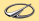

| Circuit | Date | Winner | ||
| Long Beach | 16 April | #7 - P.Gentilozzi (Oldsmobile Cutlass) |  | |
| Fair Park | 1 May | #44 - H.Haywood (Audi Quattro) | ||
| Sears Point | 29 May | #80 - WT.Ribbs (Chevrolet Camaro) | ||
| Detroit | 18 June | #44 - H.Haywood (Audi Quattro) | ||
| Niagara Falls | 26 June | #14 - W.Röhrl (Audi Quattro) | ||
| Burke Lakefront | 2 July | #14 - HJ.Stuck (Audi Quattro) | ||
| Brainerd | 17 July | #14 - HJ.Stuck (Audi Quattro) | ||
| Meadowlands | 23 July | #14 - HJ.Stuck (Audi Quattro) | ||
| Lime Rock Park | 6 August | #1 - S.Pruett (Mercury Merkur XR4TI) | ||
| Mid-Ohio | 3 September | #14 - HJ.Stuck (Audi Quattro) | ||
| Elkhart Lake | 10 September | #1 - S.Pruett (Mercury Merkur XR4TI) | ||
| Mosport | 25 September | #88 - D.Brassfield (Chevrolet Corvette) | ||
| St. Petersburg | 23 October | #4 - W.Röhrl (Audi Quattro) | ||